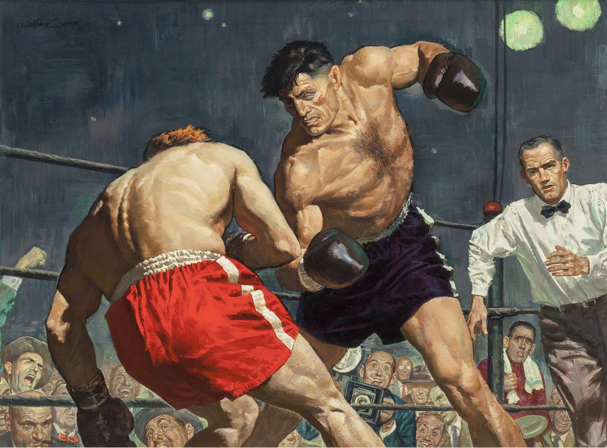

A Freelance Accounting Assignment
Exercises on vocabulary and scenarios related to freelance accounting.
Practice Library
A free-standing collection of reading passages, dialogues and listening texts — independent of CEFR level, for whenever you want extra practice. Items with an audio badge include a matching recording.

98 texts and exercises, alphabetically.
Exercises on vocabulary and scenarios related to freelance accounting.
Explore cultural aspects of the United States through reading and comprehension exercises.
Reading and comprehension exercises about Capetown culture and landmarks.
Vocabulary exercises on car components and automotive terms.
Exercises on climbing terminology and scenarios.
Exercises combining coffee culture and IT terminology, with answers provided.
Exercises on coffee preparation techniques and vocabulary.
Vocabulary and comprehension exercises on everyday household tasks.
Exercises on cybersecurity terminology and scenarios.
Exercises on describing daily routines and activities.
Reading and comprehension exercises based on a detective narrative.
Exercises on using "do" and "make" in the context of livestock farming.
Exercises on restaurant-related vocabulary and scenarios.
Exercises exploring Egyptian history and cultural aspects.
Exercises on glamping (glamorous camping) vocabulary and experiences.
Exercises on grocery shopping scenarios and vocabulary.
Exercises exploring Haitian culture and history.
Exercises on hiking terminology and mountain adventure scenarios.
Practice forming and answering questions in English.
Comprehension exercises based on an investigative narrative.
Exercises combining IT terminology with jiu-jitsu scenarios.
Exercises on preparing for IT job interviews.
Exercises on restaurant culture and vocabulary in Milan.
Exercises on psychological and strategic thinking scenarios.
Exercises on financial terminology and scenarios.
Exercises on American football terminology and culture.
Exercises exploring the history and culture of North Sentinel Island.
Exercises on describing travel and visitation experiences in New York.
Learn phrasal verbs through a bed and breakfast context.
Practice phrasal verbs related to international travel.
Listening and reading exercises on physical education topics.
Exercises on restaurant conversations and vocabulary.
Exercises on Rio de Janeiro culture.
Exercises exploring Romanian culture and history.
Exercises on sales techniques and business vocabulary.
Exercises about the Brazilian state of Santa Catarina.
Practice say, speak, talk and tell in a market-day story.
Practice say, speak, talk and tell in a tech-investing story.
Exercises with calming and reflective reading passages.
Exercises on travel and cultural experiences in Southeast Asia.
Exercises on St. Patrick's Day history and traditions.
Exercises on ethical issues in technology.
Exercises on interpreting Aesop's Fables, with answers provided.
Exercises on market-related vocabulary and scenarios.
Exercises on travel-related conversations and vocabulary.
Exercises on travel-related conversations and vocabulary.
Exercises on legal and trial-related vocabulary.
Exercises on travel experiences in Rio Grande do Sul, Brazil.
Exercises comparing São Paulo and Porto Alegre.
Exercises based on narratives about unfortunate events.
Exercises on American restaurant culture and vocabulary.
Answers come from an AI model and may occasionally be wrong — always double-check against your lesson material. Nothing you type is stored after you close this window.